Gamutvision™ is a powerful utility for exploring color management. With it you can
- Examine color space and device gamuts (ranges of reproducible colors).
- Study gamut mappings and rendering intents (image transformations between color spaces or devices with different color gamuts and algorithms for handling colors where input colors are near or outside the output gamut). The definitions of the four rendering intents can be quite vague— especially perceptual rendering intent, which is often recommended for photographers. And the definitions often don't correspond to actual performance.
- Evaluate ICC profile quality.
- Estimate printer and paper quality by examining ICC profiles— which you can download from the Internet.
- Preview how much an image or simulated GretagMacbeth™ ColorChecker® will change when sent to a printer.
Gamutvision uses ICCTrans, the Matlab interface to the LittleCMS color management system. The ICCTrans file is worth downloading for the excellent manual. Many thanks to Ignacio Ruiz de Conejo and Marti Maria (of Hewlett-Packard Spain) for their outstanding work.
Gamutvision structure
Gamutvision analyzes one of several built-in test patterns, external image files, or a simulated GretagMacbeth™ ColorChecker®. The test image is displayed on the upper-right of the Gamutvision window. The bulit-in color test patterns vary HSL Hue H and either Lightness L or Saturation S, keeping the third parameter (S or L) fixed. HSL values include (HSL) in their designation, e.g., L(HSL), to distinguish them from CIELAB L*.
Basic built-in patterns
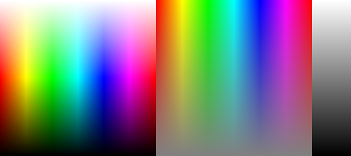 |
| Left: Fixed S(HSL) pattern (normally S(HSL) = 1) with all HSL Hues and Lightnesses. Represents the gamut boundary when Saturation S(HSL) = 1 (its maximum value). S(HSL) can be reduced (< 1) to visualize profile behavior for unsaturated colors. |
Middle: Fixed L(HSL) pattern (normally L(HSL) = 0.5) with all HSL Hues and Saturations. Colors reach maximum saturation at Lightness L(HSL) = 0.5. Lightness can be selected, 0.05 ≤ L(HSL) ≤ 0.95. |
Right: Grayscale pattern. 0 ≤ L(HSL) ≤ 1. |
The diagram on the right illustrates Gamutvision's data flow in detail. RGB input consists of one of the three patterns shown above or an external image file. To obtain the input display it is mapped to L*a*b*, xy, or uv using the input profile. RGB input is also mapped from the input to the output profile to obtain the output RGB (or CMYK) values, which are then mapped to L*a*b*, xy, or uv using the output profile to obtain the output display. Numerous display options are available.
|
 |
Here is a broader picture Gamutvision's structure. You can select up to four ICC profiles: two input profiles and two output profiles.
- The input image is interpreted according to the input profile (1 or 3). Input plots always display the full gamut of the device or color space represented by the input profile.
- The input image is mapped to the output image, using the input and output profiles with the specified rendering intent. No gamut mapping takes place (RGB values are unchanged) if Rendering intent is set to None.
- Output plots display the gamut of the output device or color space (profiles 2 or 4) after mapping. Numerous display options are available.
|
 |
- You can view input and corresponding output gamuts simultaneously.
- You can view any two gamuts simultaneously using Displays A and B.
- You can switch between views for rapid comparisons.
For example, to compare the effects of two working color spaces with a single printer/profile combination, you would enter the two working color space profiles into input Profiles 1 and 3 and the same printer profile into output Profiles 2 and 4. You could then view profiles 1 and 2 or 3 and 4 (showing the effects of the gamut mapping), or you could use a Display box (A or B, shown below) to compare the output gamuts in profiles 2 and 4. The gamuts for Epson R2400 Premium Luster prints made from Adobe RGB (1998) (wireframe) and sRGB (solid) working color spaces are shown on the right, using the 3D L*a*b* display set to Top view. (Displays on this page use Epson-supplied X-rite "premium" profiles, released around October 2005; different from earlier profiles supplied with the R2400). |
 |
Startup
When you open Gamutvision the following window (shown reduced) appears. The first time you run Gamutvision, Browse... appears in all four profile windows (bottom left). Settings are saved in succeeding runs.
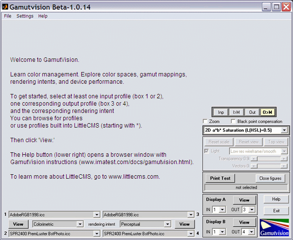
- Click on on the right the Profile 1 popup menu, located near the lower left of the Gamutvision window, just above View. The list on the right appears. Click on Browse... to open a browse window (the default folder is the Windows XP profile folder). Clicking on an entry starting with * selects one of the profiles built into LittleCMS. You can find a description of these profiles in the manual included in www.littlecms.com/lcmsMatlab.zip, downloadable from the LittleCMS website.
|
|
Browse...
*sRGB (IEC6 1996-2.1 sRGB)
*Lab (D50-based Lab)
*LabD65 (D65-based Lab)
*XYZ (XYZ (D50))
*Gray22 (D50 gamma=2.2 grayscale)
(previous profile)
Profile and output from box 2 (Profile 3 only)
Recent ICC profile |
The Browse... dialog box shown on the right opens by default in the Windows XP profiles folder. If you are using a different system, you should first click on Settings, ICC profile folder and navigate to the appropriate folder. The folder may contain a large variety of profiles-- for scanners, cameras, printers, monitors, etc. You will normally select source or display (color space) profiles (not output) for input profiles (1 and 3) and display or output (often printer) profiles for output profiles (2 and 4).
|
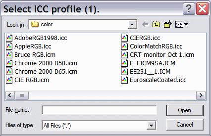 |
- Click on on the right the Profile 2 popup menu, located at the lower left of the Gamutvision window, just below View. The same options appear as for the Profile 1 popup menu. Select a profile.
- To change the rendering intent, click on the rendering intent menu, between the Profile 1 and Profile 2 popup menus, to the right of View. You can choose among
- the four classic rendering intents: Perceptual, Colorimetric (relative), Saturation, or Absolute (colorimetric),
- None, in which case no gamut mapping takes place, and the full gamut of the output profile is displayed,
- Round trip (Perceptual or Colorimetric), useful for evaluating printer profile quality. Described here, and
- the four classic rendering intents, soft-proofed (previewed on the monitor). Soft-proofed gamuts are restricted by the monitor profile's gamut. The monitor profile, which defaults to sRGB, can be selected by clicking Settings..., Monitor profile. These intents enable soft-proofed monitor gamuts to be compared with final output.
- Select the desired view in the main display selector. 3D L*a*b* (wire input, solid output), shown below, is a good view to start with. You can freely switch between views at any time.
- Now, click on View to see the results of the gamut mapping from input profile 1 to output profile 2.
- You may repeat steps 1 through 5 for Profiles 3 and 4. You can chain profiles by selecting Profile 2 (output) as the input for Profile 3. Displays A and B allow input and output profiles to be compared side-by-side.
| Selecting ICC profiles |
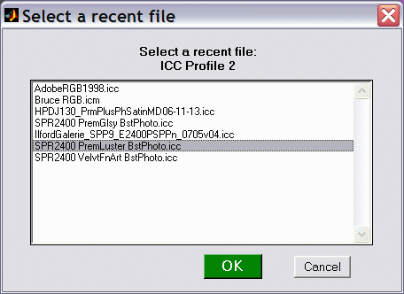 |
| Several options are available in Profile popup menus 1 through 4. |
| Browse... Open a standard browse window. |
*sRGB...
*Lab (D50-based Lab)
*LabD65 (D65-based Lab)
*XYZ (XYZ (D50))
*Gray22... |
|
Select a standard built-in profile. |
|
| (previous profile) displays the profile most recently opened with Browse... or Recent ICC profile. Click here to restore this profile after selecting one of the built-in protiles. |
| Profile and output from box 2 (Profile 3 only) The profile and output from box 2 are entered into box 3. |
| Recent ICC profile The window on the right appears, listing up to twelve recently-opened profiles available for opening. |
|
The full Gamutvision window is shown reduced below. Explanatory tooltips appear when the cursor is moved over buttons or controls.
| The large image on the upper left contains the primary gamut display. The 3D L*a*b* plot of the input gamut (wire frame) and mapped output gamut (solid) is shown. You can change the angle of view by clicking your left mouse button anywhere on the image, then moving it. You can also zoom in and out and select among several other options. The gamut volume, which is the single number that best characterizes color response, is shown on the lower right of the gamut display. Several additional views, listed in the table below , can be selected from the display selector box on the right that contains 3D La*b* (wire input, solid output). |
The image on the right contains the test pattern or image. Depending on the settings (Inp, ..., O>M), the input or output image may be displayed in its original form or mapped to the monitor color space (typically similar to sRGB). Settings are described in the table below. Output mapped to display profile O>M is the default. |
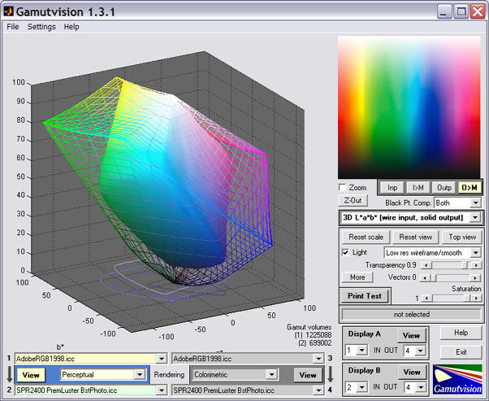 |
| The area below the left image is used to select the two input and two output profiles as well as the rendering intents (or none) used to transform the input to the output images. |
The lower right of the Gamutvision window is the plot control area, described below. Saturation = 1 displays the gamut boundary. Lower values display the gamut interior. |
Test pattern (input or output)
This image, located on the upper right of the Gamutvision window, is controlled by selecting one of the four buttons ( Inp, I>M, Out, O>M ) just below the image. The pattern depends on the display, and may be affected by the Saturation (or Lightness) slider.
| Inp |
|
Input image (original) with no mapping. |
| I>M |
|
Input image mapped to the monitor color space (which defaults to sRGB, but can be set to any monitor profile). |
| Out |
|
Output image (original) with no mapping.This image may look strange for printer profiles because it contains the bits sent to the printer, which can have a highly nonlinear relationship to the printed image. |
| O>M |
|
Output image mapped to the monitor color space (the default). |
- Zoom checkbox. Checking it turns zoom on and (for 3D displays) rotation off; unchecking it turns zoom off and (for 3D displays) rotation on. The zoom setting is kept for similar displays, for example when changing the profile but keeping the display unchanged.
- Z-Out zooms the image back out (resets the zoom)
- Black point compensation checkbox. Sets Black Point Compensation (BPC), explained here. Can be set separately for left (1>2) and right (3:4) data flows. Only affects Colorimetric and Saturation rendering intents for Printer (OutputClass) output profiles; has no effect on monitor (DisplayClass; color space) profiles. Most visible in the B&W density response display. Makes the B&W tonal response of the Colorimetric intent resemble Perceptual.
- Main display selector. (3D La*b* (wire input, solid output) is displayed in the example.) Selects one of the displays listed briefly in the table below, and in detail in Using Gamutvision Part 2: Displays.
- Display options area. The contents changes for different displays.
- Print Test allows you to open a file of the printed and scanned Print Test pattern for analysis. Described in Gamutvision Print Test.
- The two Display A and B areas that allow you to select which of the profile results (1-4) to display as input and output. This facilitates comparisons.
- Help opens a web browser window with online help.
- Exit terminates Gamutvision.
|
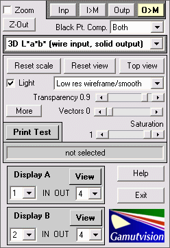 |
Table of Gamutvision displays
This table contains a brief summary of displays. Detailed descriptions can be found in Using Gamutvision Part 2: Displays.
| Display |
|
Display |
|
3D L*a*b* (wire input, solid output) (S ≤ 1)
A 3D plot in L*a*b* space showing the input gamut as a wire frame and the output gamut as a solid. May be rotated or zoomed. Vectors and gamut volumes can be displayed. Lighting can be turned on to highlight the gamut surface. S has a default value of 1, but can be set to any value between 0 and 1. |
 |
2D a*b* Gamut (S = 1)
2D Gamut map on the a*b* plane. Shows the input and output gamut for the S=1 (maximum saturation) pattern for L = [0.1, 0.3, 0.5, 0.7, 0.9]. |
 |
| 3D L*a*b* Reversed (wire output) (S ≤ 1) |
2D a*b* Saturation (L(HSL) constant)
Shows the input and output gamut response for saturation levels S = [0, 0.2, 0.4, 0.6, 0.8, 1] for fixed values of L(HSL). L has a default value of 0.5 (where colors are the most saturated), but can be set to any value between 0.05 and 0.95. This is an excellent representation of a printer's color response. |
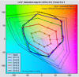 |
2D a*b* Color difference (L(HSL) constant)
Shows the perceptual difference between the input and output gamuts at saturation levels S = [0, 0.2, 0.4, 0.6, 0.8, 1] using fixed values of L(HSL) between 0.05 and 0.95 (default = 0.5). Metrics include ΔE*ab, ΔC*ab, ΔE*94, ΔC*94, ΔE*CMC, ΔC*CMC, ΔL*, ΔChroma, ΔHue angle, and Δ|Hue distance|. |
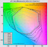 |
3D/2D HL Color difference (S ≤ 1)
Detailed 3D or 2D plots of the perceptual differences between the input and output gamut boundaries (saturation S = 1), with the option of reducing S to display the interior of the gamut volume. Metrics include ΔE*ab, ΔC*ab, ΔE*94, ΔC*94, ΔE*CMC, ΔC*CMC, ΔL*, ΔChroma, ΔHue angle, and Δ|Hue distance|. Input and output Lightness (L*) and Chroma (c*) can also be displayed. |
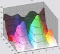 |
xy Chromaticity (L(HSL)=0.5)
CIE 1931 xy Chromaticity pattern. L(HSL)=0.5 pattern. Shown with gamuts for S = [0, 0.2, 0.4, 0.6, 0.8, 1]. Familiar but not perceptually uniform: greens are greatly exaggerated.
|
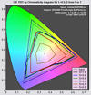 |
u'v' Chromaticity (L(HSL)=0.5)
CIE 1976 y=u'v' Chromaticity pattern. L(HSL)=0.5 pattern. More perceptually uniform than the CIE 1931 xy diagram, but still not perfect.
|
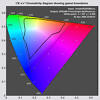 |
2D HSL contour plots
2D plot showing values of H, S, or L(HSL) or differences between input and output H, S, and L(HSL) values. Uses either L(HSL)=0.5 or S=1 patterns. The a*b* and HL color differences (above) are preferred because results are based on device-independent L*a*b* space. |
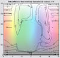 |
Black & White density response
Grayscale density response, typically Density (-log10(reflectance)) vs. log10 pixel level. The digital counterpart of traditional density curves. Uses the Grayscale pattern. The output L*, c* vs. input L* plot displays deviation from neutrality. The best display for observing the effects of Black point compensation. |
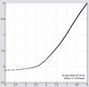 |
Read image for analysis (external image file)
2D pseudocolor image of the perceptual differences between input and output colors— typically between an image and printed output. Same metrics as the color difference plots. Uses the contents of an image file (not a built-in pattern). Can also produce a 3D L*a*b* vector plot of color changes. |
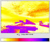 |
GretagMacbeth™ ColorChecker®
Analyzes a simulated ColorChecker using the same options as Read image for analysis, i.e., 2D pseudocolor analysis or 3D L*a*b* vector analysis. |
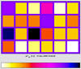 |
Profile Info Text from the header, including profile type, profile connection space, etc. |
|
(Right) An early colourization fiasco, doomed when the colourists failed to agree on the rendering intent for mapping [255, 255, 255] to [255, 0, 0]. They never even got to the colourimetric meaning of these numbers,
but they managed to establish a standards committee.
From our colour space-case file. |
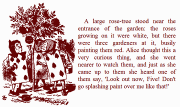 |
Menu settings
The menu bar at the top of the Gamutvision window contains three pulldown menus labeled File Settings Help .
File
- Save screen Save the Gamutvision screen as a PNG image file. A dialog box allows you to select the folder and file name for the screen image.
- Close Closes Gamutvision. Same effect as pressing Exit or clicking X on the upper right.
Settings
- ICC Profile folder Select the folder where ICC profiles are kept. Defaults to the Windows XP profile folder, C:\WINDOWS\system32\spool\drivers\color.
- Monitor profile Select the monitor profile and rendering intent. Defaults to *sRGB (the built-in sRGB profile) and (Relative) Colorimetric intent.
- 3D Plot Select options for the 3D L*a*b* plot. Same as pressing More in the 3D L*a*b* plot Display options.
- Small fonts/Normal fonts/Large fonts Select font size. May help appearance for very large screen resolutions or when DPI is set to Large size in the Main tab of the Advanced Display Settings. Change the font size if it appears too large or small relative to the other features.
- Reset screen sets the screen to its original position and size.
- Save settings Save the contents of gamutvision.ini, which contains all current Gamutvision settings, in a named file.
- Retrieve settings Retrieve the Gamutvision settings contained in a named file.
- Default settings Restore the default settings by erasing gamutvision.ini.
- Save 3D view Save the current 3D view (angle and zoom) in a named (.ini) file. Does not work for 2D views.
- Retrieve 3D view Retrieve a 3D view, previously saved, from a named (.ini) file. Does not work for 2D views.
Help
- Online Help Open online instructions in a web browser
- Register Register Gamutvision.
- About Version and registration information.
Gamutvision applications, tips, and techniques
These pages, which illustrate a few of Gamutvision's many uses, make excellent tutorial material. They will help you to get the most out of Gamutvision.
Identifying defective profiles — Use Gamutvision to find defective profiles. The example is a popular profile with a glaring defect for the excellent Epson R2400 printer. Gamutvision points the way to a simple solution.
Evaluating printer profiles with Round trip — Gamutvision's Round trip rendering intent allows you to evaluate a printer profile's reversibility (i.e., self-consistency). It doesn't tell the whole story, but it's a quick and easy way to find problem profiles.
Profile mystery: The case of the smudged pines — Gamutvision sheds light on a profile defect that smudges a print of pine trees.
Black Point Compensation — Gamutvision shows the meaning of the mysterious checkbox, which affects printed media with relative colorimetric rendering intent.
Camera and scanner profiles — Gamutvision shows you their color gamuts and what happens when you convert to standard color spaces.
Printer gamuts: total and real — There is a difference between a printer's theoretical (i.e., maximum) color gamut and the real color gamut achieved when working with standard color spaces. This page shows you ways of displaying this difference.
Limitations and issues
View scaling. The scaling or appearance of the view may occasionally be incorrect, especially after unusual views or zooms have been applied. The view can be restored by pressing a combination of the View, Z-out, and Reset scale buttons.
Embedded ICC profiles. Gamutvision cannot read ICC color profiles embedded in image files. This only affects the Image color difference function. You must enter the appropriate ICC profile.
Device-link profiles. Gamutvision does not currently support device-link profiles. We hope to add that capability in the future. If you try to read a device-link profile, you may get an error that terminates Gamutvision, and this error may repeat when you try to reopen it. If this happens, either (A) delete gamutvision.ini, which is located in the Gamutvision installation folder (C:\Program files\Gamutvision in English language installations), or (B) edit gamutvision.ini (a simple ASCII text file), and remove the line with the offending file. There is no need to replace it.
OpenGL. The 3D L*a*b* display uses the OpenGL renderer. This may cause instability on some computers. More information can be found here. If you are having problems that may be caused by OpenGL, you should download and install the latest driver for your graphics adaptor: details here. Gamutvision uses software OpenGL, as described here. We had serious problems prior to implementing this patch. With Gamutvision 1.1.5 you can turn off OpenGL using the More button, but this removes the wireframe display, reducing the value of the 3D L*a*b* plots. This option is primarily for diagnosing mysterious Gamutvision crashed. We recommend following the advice in the Mathworks page for getting OpenGL to work correctly.
Printing. The Gamutvision window cannot be printed directly due to compiler limitations. You must print it from an image editor after either (a) saving it and opening it in the editor or (b) copying it to the clipboard using Alt-PrintScreen, then pasting it into the image editor. Irfanview is a nice free image viewer that does the job well.
If you encounter problems with loading or running Imatest, go to the Troubleshooting page.